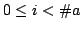
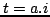

Usage
binarySearch(t, a)
Signature
binarySearch: (T, %) (Boolean, MachineInteger)
| Parameter | Type | Description |
|---|---|---|
| t | T | the value to search for |
| a | % | an array |
Returns
Returns (found?, i) such that  and  if found? is true. Otherwise, found? is false and:
The array a must be sorted in increasing order. If a is sorted with respect to a different order, it is still possible to use binary search, but from BinarySearch.
See Also
linearSearch